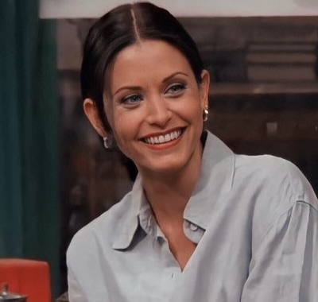

FRIENDS
Konusu
Green düğününden kaçıp New York'ta bir restoranda aşçı olduğunu bildiği çocukluk arkadaşı Monica Geller'ı bulmaya gider. Rachel, Monica'nın evine yerleşir ve onun arkadaş grubuna katılır. Bu gruptakiler: ünlü olmaya çalışan aktör Joey Tribbiani, iş adamı Chandler Bing, masöz ve müzisyen Phoebe Buffay ve Monica'nın abisi, yeni boşanmış paleontolog Ross Geller'dır. Rachel ailesinin yardımı olmadan hayata yeniden başlamaya karar verir ve grubun sık sık gittiği, Manhattan'daki Central Perk adlı cafede garson olarak işe girer. Grup burası dışında en çok Monica ve Rachel'ın New York, West Village'teki apartman dairesinde ve karşı dairede yaşayan Chandler ve Joey'nin evinde vakit geçirir.
Karakterler
Monica Geller
(Courteney Cox) Grubun annesi rolündedir,obsesif kompulsif kişiliği ve rekabetçi ruhuyla bilinmektedir. Özellikle abisi Ross tarafından sık sık çocukken çok şişman olmasıyla ilgili şakalar yapılır. Akıllı ve iyi yürekli biridir ve dizi boyunca pek çok restoranda şeflik yapar.
Phoebe Buffay
(Lisa Kudrow) Tuhaf, kafası karışık ama iyi kalpli bir masözdür. Annesinin intihar etmesi üzerine bir süre sokaklarda yaşamıştır ve arkadaşlarına sık sık bu dönemle ilgili garip hikâyeler anlatır. Kendi kendine gitar çalmayı öğrenmiştir, kafelerde kendi yazdığı şarkıları söyler. Ursula adında, kendisi kadar garip bir ikiz kardeşi vardır.
Rachel Green
(Jennifer Aniston) Zengin bir cerrahın kızıdır. Dizinin ilk bölümünde nişanlısı Barry'yi düğün gününde terk edip gizlice kaçar. Ailesinin ekonomik gücünden bağımsız olarak yaşamaya karar verir. New York'a gidip çocukluk arkadaşı Monica Geller'la yaşamaya başlar.
Joey Tribbiani

(Matt LeBlanc) Yemek yemeyi çok seven, biraz aptal ve pek başarılı olmayan bir aktördür. Days of Our Lives dizisindeki Dr. Drake Ramoray karakteriyle meşhur olur. Joey çapkın biridir, dizi boyunca onlarca kadınla ilişkisi olur.
Ross Geller
(David Schwimmer) Dizinin başlarında müzede, daha sonra New York Üniversitesinde çalışan bir paleontologdur. Altı ana karakter arasındaki en zeki olandır fakat sakardır ve garip özellikleri vardır. Üç başarısız evlilik geçirmiştir. Dizi boyunca Rachel'la sürekli ayrılıp barıştığı bir ilişki hâlindedir.
Chandler Bing
(Matthew Perry) Çok uluslu bir şirketin istatistiksel analizlerini ve veri konfigürasyonları yapan yöneticidir. Daha sonra ise işini sevmediği için istifa eder ve en alt basamaktan reklam yazarlığı kariyerine başlar. Chandler sarkastik bir espri anlayışına sahiptir, zeki biri olmasına rağmen şapşalca hatalar yapar.